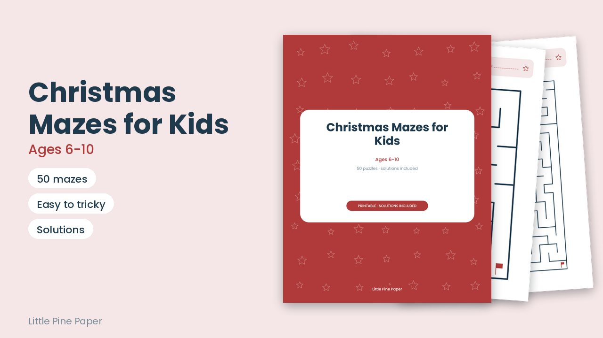
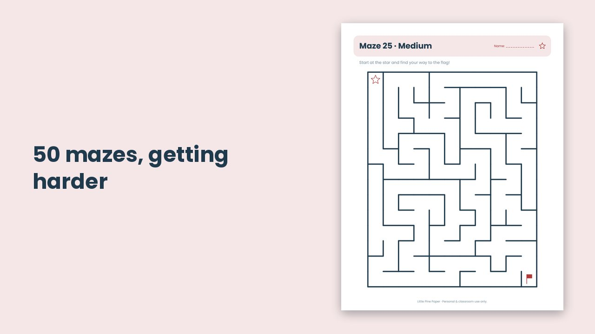
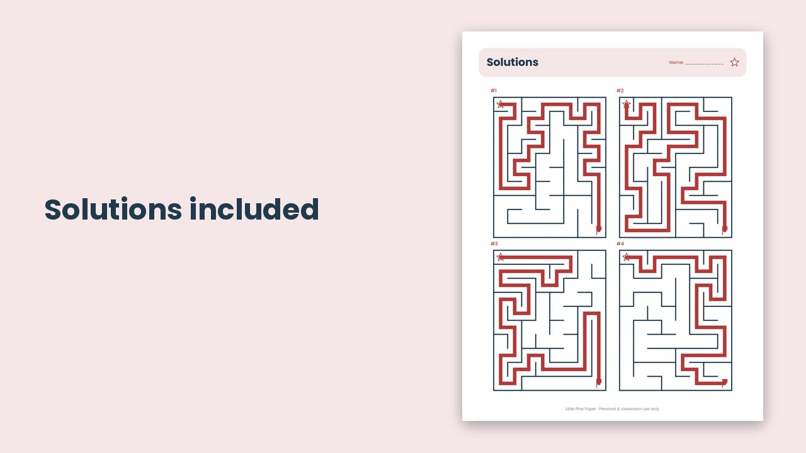

Get ready for holiday fun with a collection of festive puzzles designed for children ages 6 to 10.
What's inside: This printable PDF includes a cover page and 50 unique Christmas-themed mazes. The puzzles are organized into three difficulty levels, ranging from small to large grids, to provide a variety of challenges. Full solution pages are also included at the end of the file.
How to use: Simply download the file and print the pages at home or at a local print shop. You can print the entire book at once or choose specific levels for different skill sets. These pages are perfect for holiday parties, classroom stations, or quiet time during winter break.
Good to know: This is a digital download only; no physical product will be shipped. Your purchase includes both US Letter and A4 PDF formats. These files are licensed for personal and classroom use, making them a great resource for parents, teachers, and homeschoolers alike.